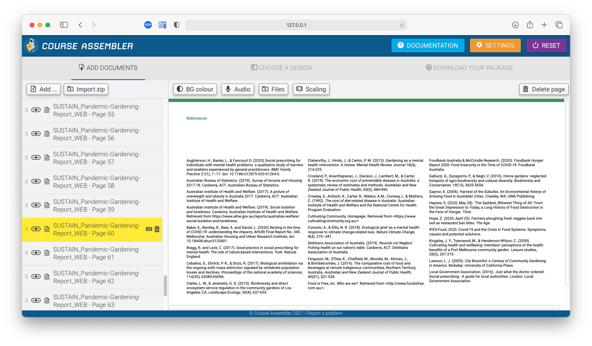

Sometimes you have converted a PDF that was a presentation rather than a document. The default scaling mode for PDF is to scale to the width of the viewport which may result in a vertical scrollbar.

For a document that an be split into multiple pages such as a presentation or PDF, there is a new toolbar item called Scaling.